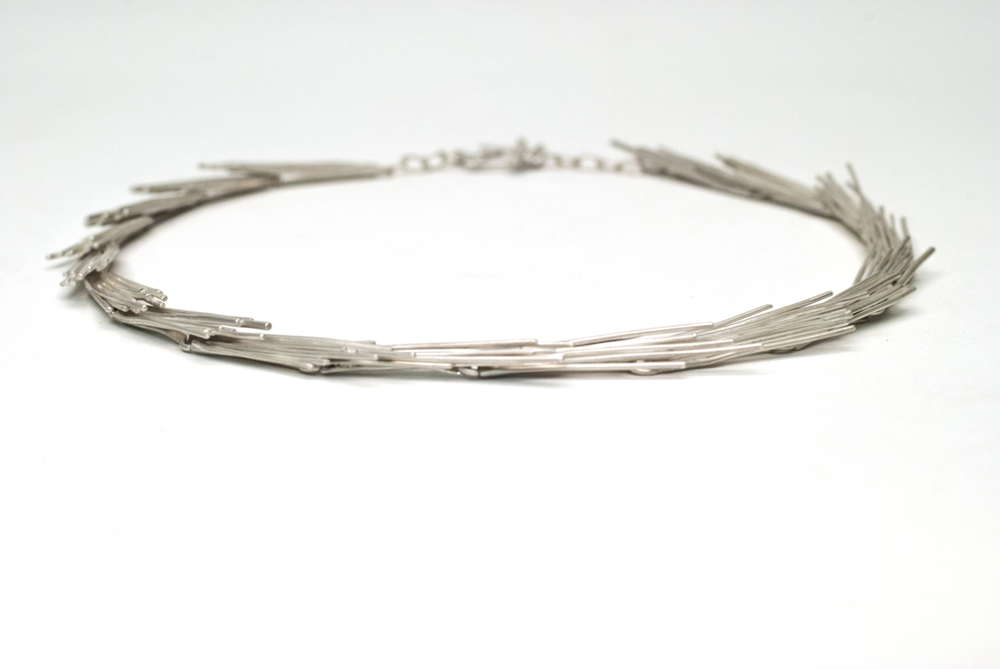

a caption

a caption

a caption

a caption
Catherine Everett is a jeweler and metalsmith working on the outskirts of Philadelphia, Pennsylvania. She began making jewelry as a high school student, and was quickly enamored with metal as a medium. Catherine continued her education at Arcadia University, where she will soon graduate with a Bachelor of Fine Arts degree with a concentration in Metals and Jewelry. During her time as an undergraduate, she studied abroad in London and Glasgow, both of which greatly influenced her work. Catherine is inspired by landscapes - cities, rolling hills, dimly lit paths - and aims to capture ephemeral moments in a permanent manner. She uses components of her surroundings to create a visual, often sentimental, narrative.
Metals Shop Monitor
August 2013 - May 2015
Arcadia University
Intern
May - September 2014
Bario Neal
Arcadia University
2011 - 2015
Bachelor of Fine Arts in Jewelry
Bachelor of Arts in Spanish
Glasgow School of Art
January - June 2013
Study Abroad
Concentration in Silversmithing and Jewellery
Senior Thesis Exhibition, Arcadia University Art Gallery, May 2015
Colour, Skypark Gallery, Glasgow School of Art, April 2013
Grimm Fairytales, Judith Taylor Gallery, Arcadia University, October 2012
I am inspired by the curiosity I experience while moving through my surroundings. This curiosity becomes tangible through the habitual collection of found objects, both natural and man-made, as well as photographs of specific landscapes and elements within them. I am drawn to objects that are simultaneously imperfect and visually striking, whether it is for their texture, patterns, colors, or shapes. These collections, sourced from various geographical locations, are the starting point for my work. I use their imperfections as design elements, often drawing upon linear forms that are prevalent in much of my collection of found materials. By translating such objects into three-dimensional, permanent forms using traditional metalworking techniques, they serve as mementos to their place of origin and the moment in which they were found. The resulting work is a collection of jewelry that is intimate, emotional, and personal to the maker, viewer, and wearer.